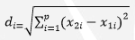
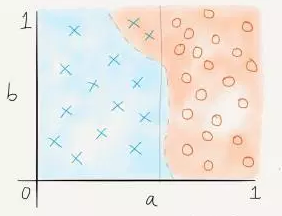
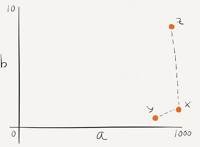
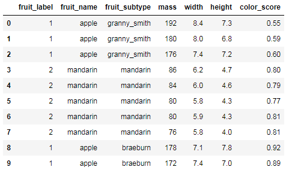
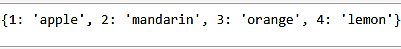
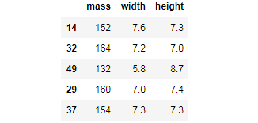
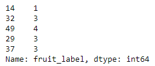
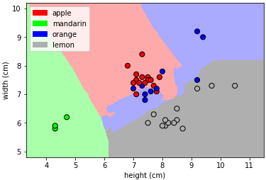

K-Nearest Neighbors
Pendahuluan
Pengertian K-Nearest Neighbor
K-Nearest Neighbor (K-NN) adalah suatu metode yang menggunakan algoritma supervised dimana hasil dari sampel uji yang baru diklasifikasikan berdasarkan mayoritas dari kategori pada K-NN. Tujuan dari algoritma ini adalah mengklasifikasi objek baru berdasakan atribut dan sampel latih. pengklasifikasian tidak menggunakan model apapun untuk dicocokkan dan hanya berdasarkan pada memori. Diberikan titik uji, akan ditemukan sejumlah K objek (titik training) yang paling dekat dengan titik uji. Klasifikasi menggunakan voting terbanyak di antara klasifikasi dari K objek. Algoritma K-NN menggunakan klasifikasi ketetanggaan sebagai nilai prediksi dari sample uji yang baru. Dekat atau jauhnya tetangga biasanya dihitung berdasarkan jarak Eucledian.
Nilai k yang terbaik untuk algoritma ini tergantung pada data. Secara umum, nilai k yang tinggi akan mengurangi efek noise pada klasifikasi, tetapi membuat batasan antara setiap klasifikasi menjadi lebih kabur. Nilai k yang bagus dapat dipilih dengan optimasi parameter, misalnya dengan menggunakan cross-validation. Kasus khusus di mana klasifikasi diprediksikan berdasarkan data pembelajaran yang paling dekat (dengan kata lain, k = 1) disebut algoritma k-nearest neighbor.
Ketepatan algoritma k-NN ini sangat dipengaruhi oleh ada atau tidaknya fitur-fitur yang tidak relevan, atau jika bobot fitur tersebut tidak setara dengan relevansinya terhadap klasifikasi. Riset terhadap algoritma ini sebagian besar membahas bagaimana memilih dan memberi bobot terhadap fitur agar performa klasifikasi menjadi lebih baik. Sesuai dengan prinsip kerja K-Nearest Neighbor yaitu mencari jarak terdekat antara data yang akan dievaluasi dengan k tetangga(neighbor) terdekatnya dalam data pelatihan.
Persamaan dibawah ini menunjukkan rumus perhitungan untuk mencari jarak terdekat dengan d adalah jarak dan p adalah dimensi data(Agusta, 2007):

Dengan keterangan :
𝑥1 : sampel data
𝑥2 : data uji
i : data ke-i
d : jarak euclidean
p : dimensi data
Algoritma
Algoritma metode KNN sangatlah sederhana, bekerja berdasarkan jarak terpendek dari query instance ke training sample untuk menentukan KNN-nya. Training sample diproyeksikan ke ruang berdimensi banyak, dimana masing-masing dimensi merepresentasikan fitur dari data. Ruang ini dibagi menjadi bagian-bagian berdasarkan klasifikasi training sample. Sebuah titik pada ruang ini ditandai kelac c jika kelas c merupakan klasifikasi yang paling banyak ditemui pada k buah tetangga terdekat dari titik tersebut. Dekat atau jauhnya tetangga biasanya dihitung berdasarkan Euclidean Distance.
-
Tentukan parameter K (jumlah tetangga paling dekat).
-
Hitung kuadrat jarak euclid masing-masing objek terhadap data sample yang diberikan.
-
Urutkan objek-objek kedalam kelompok yang memiliki jarak terkecil.
-
Kumpulkan kategori Y (klasifikasi nearest neighbor).
-
Dengan kategori nearest neighbor yang paling banyak, maka dapt diprediksikan nilai query instance yang telah dihitung.
Contoh Kasus (Hitung Manual)
Data didapatkan dari kuesioner dengan obyek pengujian berupa dua atribut (daya tahan keasaman dan kekuatan) untuk mengklasifikasikan apakah sebuah kertas tissue tergolong bagus atau jelek. Berikut ini contoh datanya:
| X1 = Daya tahan keasaman (detik) | X2 = Kekuatan (kg/m2) | Klasifikasi |
|---|---|---|
| 7 | 7 | Jelek |
| 7 | 4 | Jelek |
| 3 | 4 | Bagus |
| 1 | 4 | Bagus |
Sebuah pabrik memproduksi kertas tissue baru yang memiliki X1 = 3 dan X2 = 7. Kita gunakan algoritma KNN untuk melakukan prediksi termasuk klasifikasi apa (bagus atau jelek) kertas tissue yang baru ini.
Jawaban
-
Tentukan parameter K = jumlah banyaknya tetangga terdekat. Misal K=3.
-
Hitung jarak antara data baru dan semua data yang ada di data training. Misal digunakan square distance dari jarak antara data baru dengan semua data yang ada di data training.
| X1 = Daya tahan keasaman (detik) | X2 = Kekuatan (kg/m2) | Square Distance ke data baru (3,7) |
|---|---|---|
| 7 | 7 | (7-3)2+(7-7)2 = 16 |
| 7 | 4 | (7-3)2+(4-7)2 = 25 |
| 3 | 4 | (3-3)2+(4-7)2 = 9 |
| 1 | 4 | (1-3)2+(4-7)2 = 13 |
Urutkan jarak tersebut dan tentukan tetangga mana yang terdekat berdasarkan jarak minimum ke-K.
| X1 = Daya tahan keasaman (detik) | X2 = Kekuatan (kg/m2) | Square Distance ke data baru (3,7) | Urutan Jarak | K-3-NN? |
|---|---|---|---|---|
| 7 | 7 | (7-3)2+(7-7)2 = 16 | 3 | Ya |
| 7 | 4 | (7-3)2+(4-7)2 = 25 | 4 | Tidak |
| 3 | 4 | (3-3)2+(4-7)2 = 9 | 1 | Ya |
| 1 | 4 | (1-3)2+(4-7)2 = 13 | 2 | Ya |
Tentukan kategori dari tetangga terdekat. Perhatikan pada baris kedua pada kolom terakhir: katagori dari tetangga terdekat (Y) tidak termasuk karena ranking dari data ini lebih dari 3 (=K).
| X1 = Daya tahan keasaman (detik) | X2 = Kekuatan (kg/m2) | Square Distance ke data baru (3,7) | Urutan Jarak | K-3-NN? | Kategory K-NN |
|---|---|---|---|---|---|
| 7 | 7 | (7-3)2+(7-7)2 = 16 | 3 | Ya | Jelek |
| 7 | 4 | (7-3)2+(4-7)2 = 25 | 4 | Tidak | - |
| 3 | 4 | (3-3)2+(4-7)2 = 9 | 1 | Ya | Bagus |
| 1 | 4 | (1-3)2+(4-7)2 = 13 | 2 | Ya | Bagus |
-
Gunakan kategori mayoritas yang sederhana dari tetangga yang terdekat tersebut sebagai nilai prediksi dari data yang baru.
-
Kita punya 2 kategori Bagus dan 1 kategori Jelek, karena 2>1 maka kita simpulkan bahwa kertas tissue baru tadi yang memiliki X1 = 3 dan X2 = 7 termasuk dalam kategori Bagus.
Itulah contoh penerapan k-nn pada sebuah kasus kusioner terhadap kertas tissue.
Kelebihan
-
Mudah dipahami dan diimplementasikan.
-
Sangan non-linear.
K-NN merupakan salah satu algoritma (model) pembelajaran mesin yang bersifat non-parametrik, yaitu model yang tidak mengasumsikan apa-apa mengenai distribusi instance di dalam dataset. Model non-parametrik biasanya lebih sulit diinterpretasikan, namun salah satu kelebihannya adalah garis keputusan kelas yang dihasilkan model tersebut bisa jadi sangat fleksibel dan non-linear.
-
Kuat dalam hal ruang pencarian, misalnya kelas tidak harus linear dipisahkan.
-
Efektif apabila data training sample-nya besar.
-
Tangguh terhadap data training sample-nya besar.
-
Beberapa parameter untuk acuan: jarak metrik dan k.
-
Memiliki konsistensi yang kuat.
Kekurangan
-
Perlu untuk menentukan nilai k yang optimal sehingga untuk menyatakan jumlah tetangga terdekatnya lebih mudah.
-
Nilai komputasi yang cukup tinggi karena perhitungan jarak harus dilkukan pada setiap query instance.
-
Tidak menangani missing value secara implisit.
-
Sensitif terhadap data pencilan (outlier).
-
Rentan terhadap variabel yang non-informatif.

Gambar: Variabel yang noninformatif mengacaukan klasifikasi dalam k-nn
-
Rentan terhadap dimensionalitas yang tinggi.
-
Rentang terhadap perbedaan rentang variabel.

Gambar: Perbedaan rentang variabel bisa mengacaukan klasifikasi k-nn
Implementasi (Studi Kasus)
Alat & Bahan
Sebelum menerapkan konsep k-nearest neighbor pada studi kasus yang telah ditentukan, beberapa tools yang perlu dipersiapkan agar program yang kita rancang bisa dieksekusi dengan baik diantaranya:
- python 3.x (versi 3 keatas).
- Anaconda Navigator atau Pycharm.
Untuk mempermudah kawan-kawan mendapatkan toolsnya, sillakan kawan-kawan bisa download tools-nya disini.
Studi kasus pada Fruit Data adalah mengklasifikasikan beberapa jenis buah dengan 3 ketentuan inputan. Untuk contoh penulisan program dan datanya bisa mengambil kawan-kawan download disini.
Berikut source code dan penjelasan untuk menyelesaikan study kasus tersebut dengan K-NN Classification.
Langkah-langkah
Pertama
Import beberapa library dari python seperti:
-
pandas => memuat sebuah file ke dalam tabel virtual ala spreadsheet yang memiliki struktur data yang diperukan untuk membersihkan data mentah ke dalam sebuah bentuk yang cocok untuk dianalisis.
-
numpy => untuk operasi vektor dan matriks. Fiturnya hampir sama dengan MATLAB dalam mengelola array dan array multidimensi.
-
sklearn => untuk mengimportkan library data science. Berbagai fungsi didalamnya seperti fungsi agregasi, hitung metriks, hitung akurasi, display gambar, dan lain sebagainya.
-
matplotlib => untuk menyajikan visualisasi data cluster.
#import library
import numpy as np
import matplotlib.pyplot as plt
import pandas as pd
from sklearn.model_selection import train_test_split
from sklearn.neighbors import KNeighborsClassifier
from sklearn import neighbors
from matplotlib.colors import ListedColormap, BoundaryNorm
import matplotlib.patches as mpatches
Kedua
Mengimport data dari komputer dengan perintah pandas.
#read data
data = pd.read_table('fruit_data.txt') #Pastikan file data set berada dalam folder yang sama dengan file jupyter notebook
Ketiga
Menampilkan data.
#explore data
print(data.shape)
data.head(10) #Menampilkan 10 baris pertama dari tabel

# membuat nilai kunci utama antara fruit_label dengan fruit_name
lookup_fruit_name = dict(zip(data.fruit_label.unique(), data.fruit_name.unique()))
print(lookup_fruit_name)

Keempat
Membuat model dan data train.
X = data[['mass', 'width', 'height']]
y = data['fruit_label']
Kelima
Melakukan split (memisah) data antara data test dan data train.
X_train, X_test, y_train, y_test = train_test_split(X, y, test_size = 0.3, random_state=0)
Keenam
Mengecek nilai dengan dimensi array.
print('X_train = ', X_train.shape)
print('X_test = ', X_test.shape)
print('y_train = ', y_train.shape)
print('y_test = ', y_test.shape)
X_train.head()

y_train.head()

Ketujuh
Menentukan objek kelas knn.
knn = KNeighborsClassifier(n_neighbors = 5)
Kedelapan
Memasukkan nilai data train kedalam fungsi knn.
knn.fit(X_train, y_train)
Kesembilan
Mengecek nilai akurasi dari data test.
knn.score(X_test, y_test)
Kesepuluh
Melakukan ploting data. Mengklasifikasikan data berdasarkan jarak data dengan data tetangga terdekat menggunakan warna plot agar mempermudah membaca data.
def plot_fruit_knn(X, y, n_neighbors, weights):
X_mat = X[['height', 'width']].as_matrix()
y_mat = y.as_matrix()
# Create color maps
cmap_light = ListedColormap(['#FFAAAA', '#AAFFAA', '#AAAAFF','#AFAFAF'])
cmap_bold = ListedColormap(['#FF0000', '#00FF00', '#0000FF','#AFAFAF'])
clf = neighbors.KNeighborsClassifier(n_neighbors, weights=weights)
clf.fit(X_mat, y_mat)
# Plot the decision boundary by assigning a color in the color map
# to each mesh point.
mesh_step_size = .01 # step size in the mesh
plot_symbol_size = 50
x_min, x_max = X_mat[:, 0].min() - 1, X_mat[:, 0].max() + 1
y_min, y_max = X_mat[:, 1].min() - 1, X_mat[:, 1].max() + 1
xx, yy = np.meshgrid(np.arange(x_min, x_max, mesh_step_size),
np.arange(y_min, y_max, mesh_step_size))
Z = clf.predict(np.c_[xx.ravel(), yy.ravel()])
# Put the result into a color plot
Z = Z.reshape(xx.shape)
plt.figure()
plt.pcolormesh(xx, yy, Z, cmap=cmap_light)
# Plot training points
plt.scatter(X_mat[:, 0], X_mat[:, 1], s=plot_symbol_size, c=y, cmap=cmap_bold, edgecolor = 'black')
plt.xlim(xx.min(), xx.max())
plt.ylim(yy.min(), yy.max())
patch0 = mpatches.Patch(color='#FF0000', label='apple')
patch1 = mpatches.Patch(color='#00FF00', label='mandarin')
patch2 = mpatches.Patch(color='#0000FF', label='orange')
patch3 = mpatches.Patch(color='#AFAFAF', label='lemon')
plt.legend(handles=[patch0, patch1, patch2, patch3])
plt.xlabel('height (cm)')
plt.ylabel('width (cm)')
plt.show()
plot_fruit_knn(X_train, y_train, 5, 'uniform') # n_neighbors = 5

Kesebelas
Melakukan prediksi terhadap beberapa data baru.
fruit_prediction = knn.predict([[30, 6, 5]])
lookup_fruit_name[fruit_prediction[0]]
Output: mandarin
fruit_prediction = knn.predict([[500, 500, 500]])
lookup_fruit_name[fruit_prediction[0]]
Output: orange
Selanjutnya ulangi langkah kesebelas untuk melakukan test data baru untuk diuji dengan K-Nearest Neighbor Classification.
Referensi
-
Gorunescu, F. 2011. Data Mining Concept Model and Techniques. Berlin: Springer. ISBN 978-3-642-19720-8.
-
Han, Jiawei dan Kamber, Micheline. (2006), Data Mining : Concept and Techniques Second Edition, Morgan Kaufmann Publishers.
-
Florin Gorunescu, Data Mining: Concepts, Models and Techniques, Springer, 2011.
-
https://www.academia.edu/31306621/MAKALAH_KNN_K-NEAREST_NEIGHBOUR_